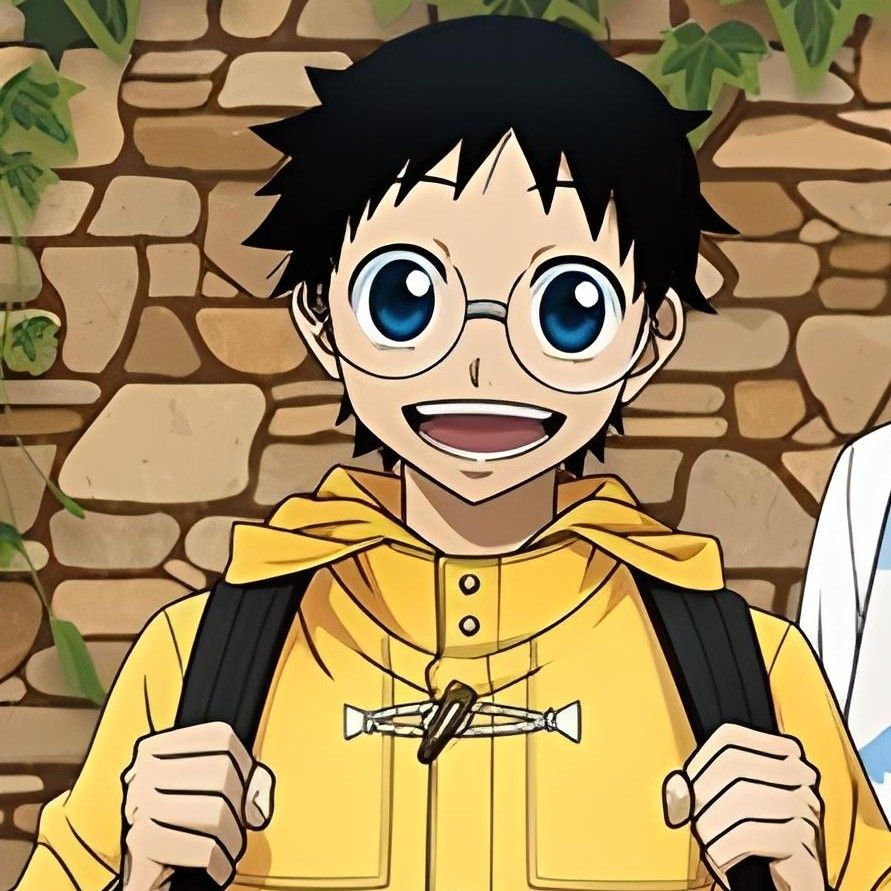
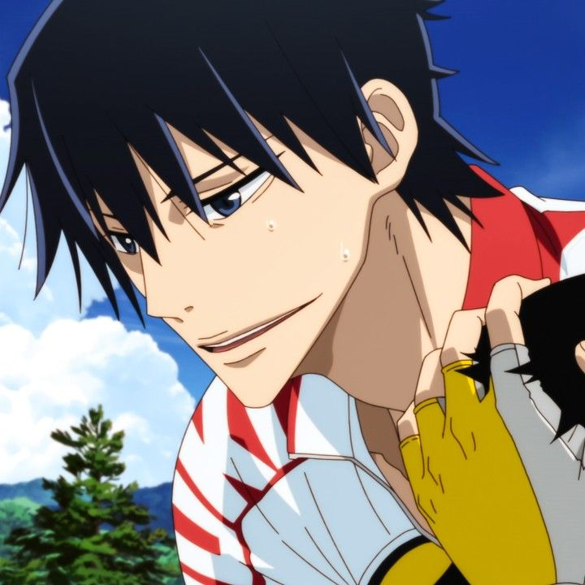
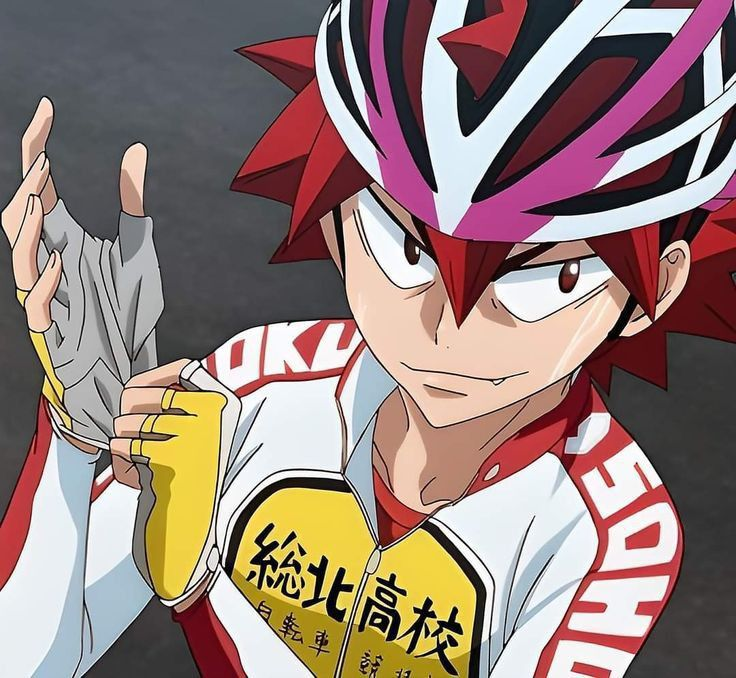
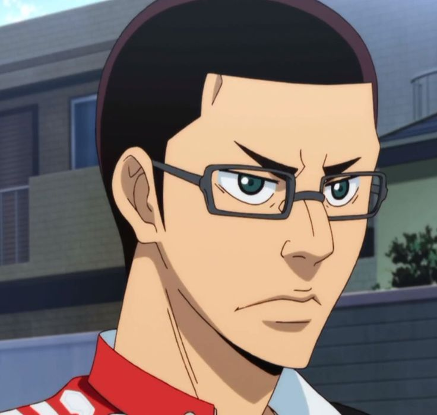
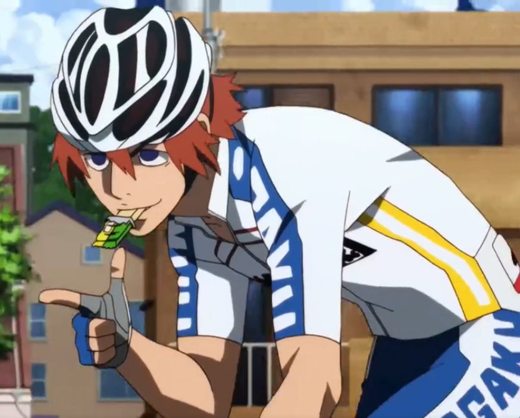
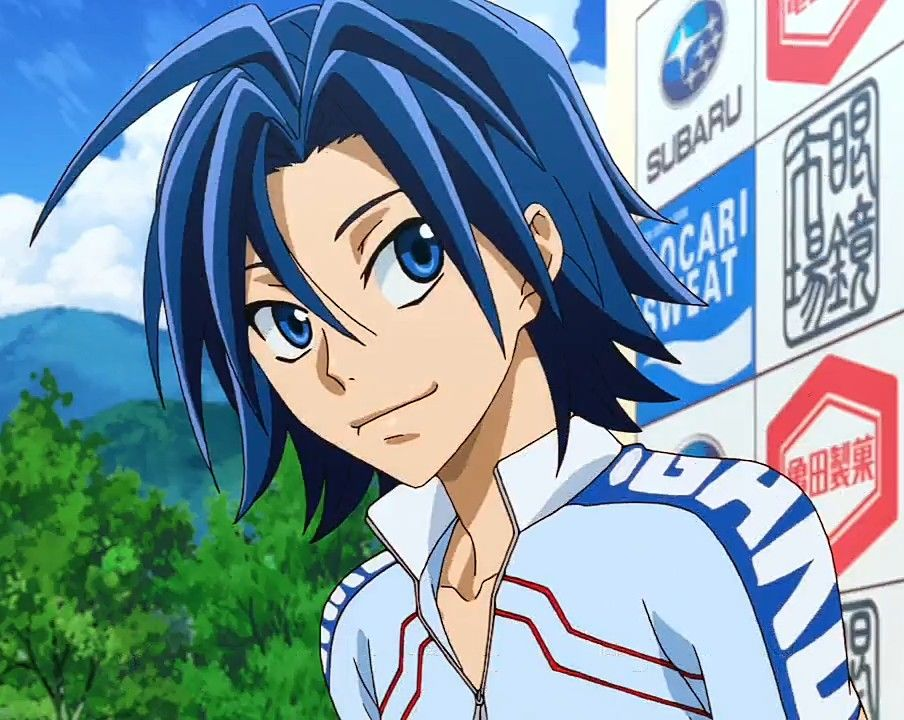

A QUICK LOOK
Sakamichi Onoda is an otaku who rides his bicycle to Akihabara every week. After meeting the members of Sohoku's cycling club, he discovers a talent he never knew he had.
Sakamichi Onoda is an otaku who rides his bicycle to Akihabara every week. After meeting the members of Sohoku's cycling club, he discovers a talent he never knew he had.
Yowamushi Pedal is about more than just racing from one point to another. Every rider has a different strength, and races often come down to how well the team works together. Onoda's progress from a casual cyclist to a serious competitor is a big part of the fun.
Sakamichi Onoda is an otaku who rides his bicycle to Akihabara every week. After meeting the members of Sohoku's cycling club, he discovers a talent he never knew he had.
Yowamushi Pedal is about more than just racing from one point to another. Every rider has a different strength, and races often come down to how well the team works together. Onoda's progress from a casual cyclist to a serious competitor is a big part of the fun.
The people who make the story what it is. Heroes, rivals, friends, and everyone in between.

An anime fan whose unusual cycling style becomes a strength.

A serious climber and one of Sohoku's strongest riders.

A flashy sprinter who loves the excitement of racing.

Sohoku's experienced captain and road racer.

A powerful sprinter known for his speed.

A gifted climber who enjoys the challenge of racing.
A few visual placeholders for screenshots, fan art, or other media you can add to the project later.
 ROADCLIMBRACE
ROADCLIMBRACE